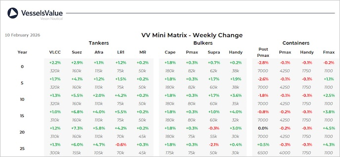

inWeekly Vessel Valuations Report11/02/2026

Bulkers:The week’s transactions reflected appetite for mid-sized tonnage from buyers seeking modernwell-maintained units for regional trade routes. Additionally, resilient Capesize freight rates supported a stream of secondhand deals from Asian buyers for older tonnage
Capesize Irene II (180,200 DWT, Jan 2006, Imabari) sold SS/DD Due to Chinese buyers for USD 21 mil, VV Value USD 20.7 mil
Capesize Robusto (173,900 DWT, Nov 2006, SWS) sold to Chinese buyers for USD 19.5 mil, VV Value USD 21 mil
Panamax Rize (82,000 DWT, Feb 2012 ,Hyundai Mipo) sold to Greek buyers for USD 17.5 mil, VV Value USD 17.8 mil
Supramax Anasa (55,700 DWT, Dec 2008, Mitsui) sold by Almi Marine for USD 13 mil, VV Values USD 13.1 mil
Handysize Darya Tapti (35,900 DWT, Jan 2015, Shikoku Dockyard) sold to Greek buyers USD 18.4 mil, VV Value USD 18.0 mil
Handysize Jetstream (34,600 DWT, 2012, SPP) sold to Greek buyers for USD 13.5 mil, VV Value USD 13.0 mil
Tankers:VV Tanker values firmed across the board this week in both the newbuild and secondhand markets. Secondhand activity was concentrated in older tonnage where values increased across all sectors
VLCC Asian Lion (297,200 DWT, May 2009, Jiangnan Shanghai Changxing HI) sold to Unknown Greek buyers for USD 60 mil, VV Value USD 60.64 mil
MR2 (Chemical/Product) Lysias (51,300 DWT, Jul 2008, STX Offshore) sold DD Due by Grace Management for USD 16.5 mil, VV Value USD 16.97 mil
MR2 (Chemical/Product) 465 (Hull) Lianyungang Wuzhou (49,900 DWT, Jun 2026, Lianyungang Wuzhou Shipbuilding HI) sold to Asyad Shipping for USD 45 mil, VV Value USD 44.88 mil
MR2 (Chemical/Product) UOG Oslo (46,100 DWT, Dec 2010, Hyundai Mipo) sold SS/DD Due by Fearnley Securities AS for USD 22.5 mil, VV Value USD 20.84 mil
Containers:Values remain stable across the board this week, apart from an uplift in older Feedermaxes. Indicating that there is still good appetite in the market for available vessels
Panamax Container Rio Grande (4,253 TEU, Jul 2008, Samsung) sold to Singapore for USD 31.5 mil Inc TC, VV Value USD 34 mil.
Handy Container Kanway Lucky (1,930 TEU, Nov 2022, Guangzhou Huangpu Shipbuilding) sold to Erasmus Shipinvest for USD 33 mil, VV Value USD 34.3 mil.
Feedermax Nordic Porto (1,084 TEU, Jan 2011, Nanjing Wujiazui) sold to MSC for USD 14 mil, VV Value USD 12.6 mil
